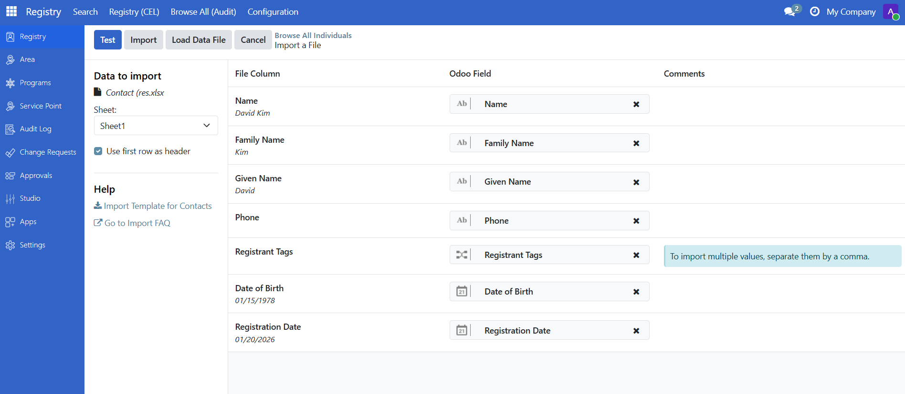
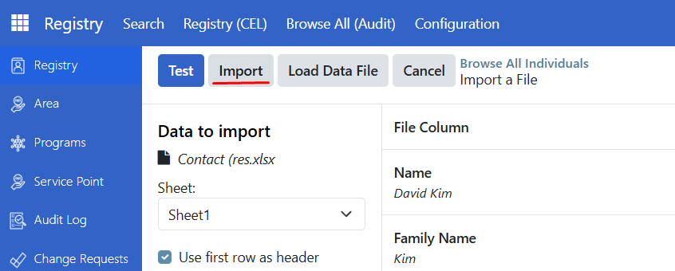
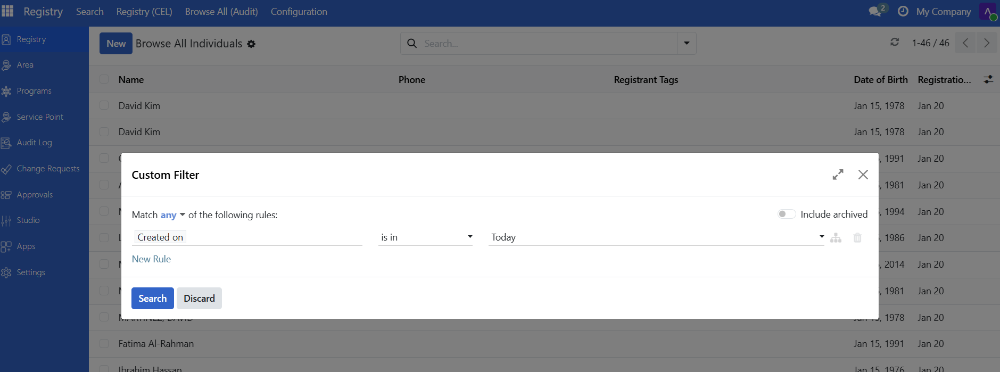
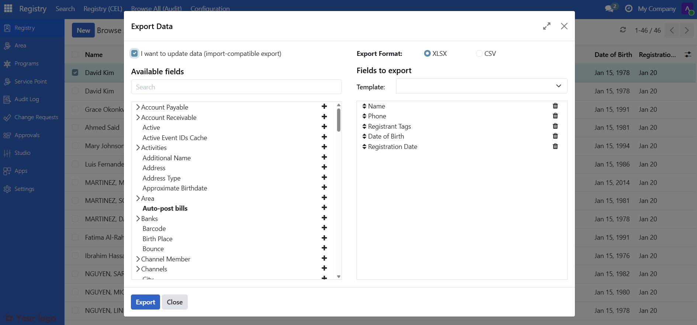
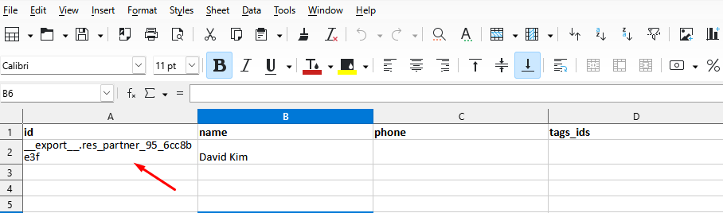
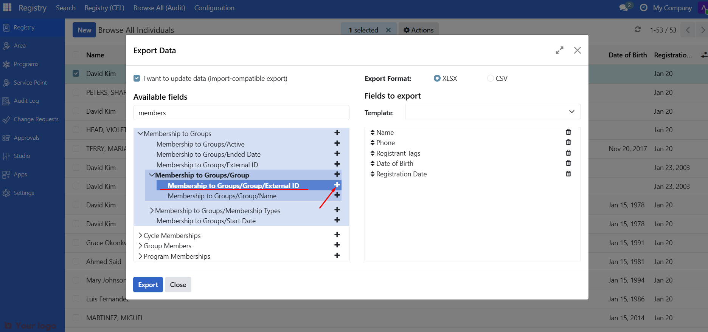
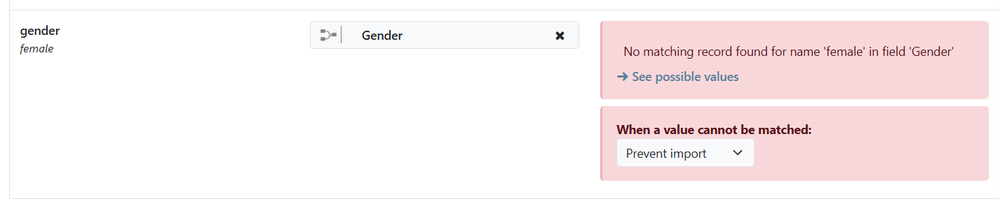

Import registrant data
Contents
Import registrant data#
Applies to: Social Registry, SP-MIS
What you will do#
Bulk import registrant data from CSV or Excel files to add new records or update existing ones.
Before you start#
Administrator access (required for import and for Browse All (Audit))
Data file in CSV or XLSX (Excel) format
Spreadsheet software (Excel, Google Sheets, or LibreOffice) to prepare the file
Understanding import#
Import in OpenSPP works by uploading a file (CSV or Excel) whose structure matches the data model used by OpenSPP. Column names in your file must correspond to the field names in the implementation so that each column maps to the correct field when records are created or updated. If the structure or field names do not match, data may be ignored, misapplied, or the import may fail.
You can use import to:
Purpose |
Description |
|---|---|
Add new records |
Create multiple individuals or groups at once |
Update existing records |
Modify data for registrants already in the system |
The recommended way to get the correct structure is to export a template from OpenSPP (see Step 1. Prepare your import file) and use that file’s headers and format as the basis for your import file. This ensures your columns align with OpenSPP’s fields and map correctly during import.
Import new records#
Step 1. Prepare your import file#
Get a template#
The best way to prepare your file is to export existing records first:
Go to Registry > Browse All (Audit) > All Individuals (or All Groups)
Select one record
Use Action > Export to download a template
Select the checkbox I want to update data (import-compatible export) to export only fields that OpenSPP recognizes for import
On the downloaded xlsx file template, keep only the header row, delete the data rows

Format your data#
Prepare your data following these rules:
Data type |
Format |
Example |
|---|---|---|
Dates |
YYYY-MM-DD |
1990-05-15 |
Phone numbers |
Text (not number) |
09171234567 |
IDs |
Text (not number) |
000123456 |
Yes/No fields |
TRUE or FALSE |
TRUE |
Important
Format phone numbers and ID columns as Text in Excel. Otherwise, Excel may remove leading zeros (000123 becomes 123).
In Excel: Right-click column > Format Cells > Text
Required fields#
For new individual records, these fields are required:
Field |
Description |
|---|---|
family_name |
Last name / surname |
given_name |
First name |
name |
given name + family name |
For new group records, this field is required:
Field |
Description |
|---|---|
name |
Group name |
Optional fields#
Common optional fields you can include:
Field |
Description |
|---|---|
birthdate |
Date of birth (YYYY-MM-DD) |
address |
Physical address |
Email address |
|
phone |
Primary phone number |
registration_date |
Registration date (defaults to today) |
Step 2. Navigate to import#
Go to Registry > Browse All (Audit) > All Individuals (or All Groups)
Click the Gear icon.
Select Import records

Step 3. Upload your file#
Click Upload File
Select your prepared CSV or XLSX file
Sample document for reference:

Step 4. Map columns#
OpenSPP automatically maps columns based on header names. Review the mapping:

Green checkmarks indicate successfully mapped columns
Yellow warnings indicate columns that need manual mapping
Use the dropdown to manually map any unrecognized columns
Step 5. Test the import#
Click Test to validate your file without importing.

If successful, you will see: "Everything seems valid"
If there are errors, see the Error Handling section below.
Step 6. Import#
When validation passes, click Import to create the records.

A notification confirms how many records were imported.

Tip
For large files (1,000+ records), check Import in the background to prevent browser timeouts.
Step 7. Verify#
Search for imported records to confirm they were created correctly:
Use the Registry Search Portal to find records by name
Or filter by "Created on" date to find today's imports

Update existing records#
To update records that already exist in the system:
Step 1: Export records to update#
Select the records you want to update by clicking the checkbox beside the individual or group
Action button should appear, use Action > Export
Check "I want to update data (import-compatible export)"
Click Export

This includes the ID column, which is required for referencing the corresponding record.

Step 2: Modify the file#
Open the exported file in your spreadsheet software
Modify the values you want to change
Keep the ID column unchanged
Save the file
Warning
Empty cells will overwrite existing values with blank. If you do not want to change a field, keep its original value.
Step 3: Import the modified file#
Follow the same import steps as above. OpenSPP will match records by ID and update them.
Add individuals to existing groups#
To add individuals to existing groups during import:
Step 1: Get the group external ID#
Go to Registry > Browse All (Audit) > All Groups
Select the group(s) you want to add individuals to
Use Action > Export
Check "I want to update data (import-compatible export)"
Click Export
Note the External ID value from the exported file for the group(s)

Step 2: Get the membership header#
Go to Registry > Browse All (Audit) > All Individuals
Select at least one individual record
Use Action > Export
Check "I want to update data (import-compatible export)"
In the export dialog, search for membership to groups
Expand the section and add Membership to Groups/Group/External ID to the fields to export
Click Export

The exported file will contain the header individual_membership_ids/group/id. This is the column where you will assign the group's External ID.
Step 3: Prepare your import file#
Open the exported individual file in your spreadsheet software
Add or modify the individual_membership_ids/group/id column
Enter the External ID of the group(s) you want to assign individuals to
Save the file
Step 4: Import the file#
Follow the same import steps as described in Import New Records. Once imported, the individuals will belong to the group(s) you specified.
Error handling#
"No matching records found"#
Cause: A field value does not match predefined options.

Solution:
Find valid values in the system
Go to Settings > Vocabulary > Manage Vocabularies
Search for the field (for example, gender), then click it and open the Codes tab to see valid values
Use the exact values as shown in the system
"To import, select a field"#
Cause: OpenSPP does not recognize a column header.

Solution:
Click the dropdown to manually map the field
Or remove the column if not needed
"Column contains incorrect values"#
Cause: Date format is incorrect.

Solution: Change dates to YYYY-MM-DD format (for example, 2024-12-18)
Best practices#
Practice |
Why |
|---|---|
Always test first |
Catches errors before they affect data |
Format numbers as text |
Prevents Excel from removing leading zeros |
Keep backups |
Export data before bulk updates |
Use background import |
Prevents timeouts for large files |
Verify after import |
Confirms data imported correctly |
Import in batches |
For very large datasets, split into smaller files |
Are you stuck?#
Import menu not visible?
You need Administrator access
Contact your administrator to request access
File not uploading?
Only CSV and XLSX formats are accepted
Check the file is not corrupted or too large
Try saving as a new file
Some fields not importing?
Calculated fields (like Age) cannot be imported
Use "import-compatible export" to see which fields can be imported
Dates showing incorrectly?
Make sure dates are in YYYY-MM-DD format
Check that the column is not formatted as a number in Excel
Phone numbers missing leading zeros?
Format the phone number column as Text before entering data
Re-type the numbers with leading zeros if needed
Import takes too long?
Use Import in the background option
Split large files into smaller batches (500-1000 records each)
Next steps#
Export registrant data - Learn how to export data
Search and filter registrants - Find imported records
Register an individual - Register individuals manually instead